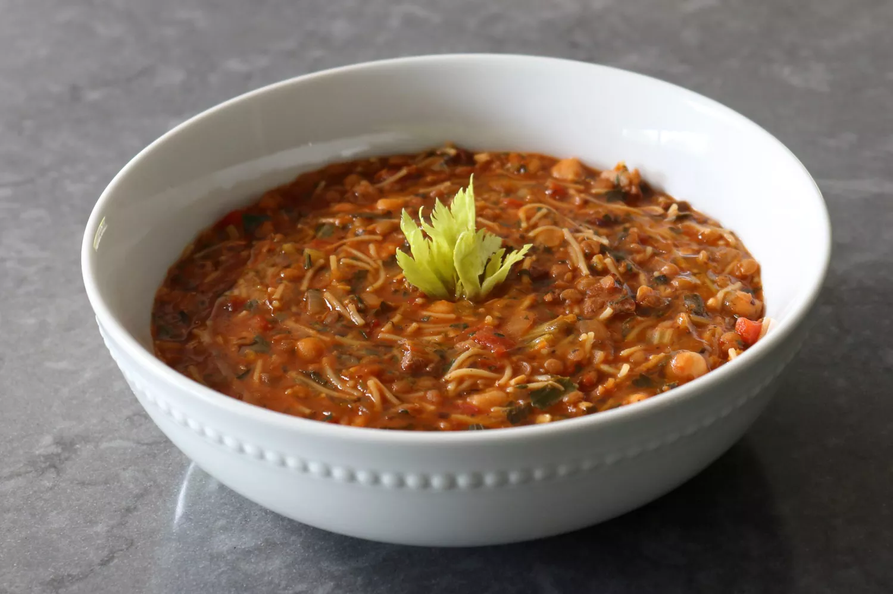

This is Morocco's most popular soup and once you taste it you'll
understand why since the combination of pasta, lentils, and chickpeas
is so hearty, so flavorful, and so satisfying, it is without a doubt
one of the best soups you'll ever enjoy. If you like a vegetarian
harira soup, you will enjoy this soup.

Morrocan Harira Soup
Ingredients
2 tablespoons extra-virgin olive oil, plus more for garnish
Heat olive oil in a stock pot over medium-high heat and cook cubed lamb
until nicely browned and some of the fat has rendered, about 5 minutes.
Toss in diced onion and a generous pinch of salt. Cook, stirring often,
until onion is soft and lightly browned, 4 to 5 minutes. Season with
smoked paprika, coriander, cumin, ground ginger, black pepper, and
cinnamon. Add minced garlic and cook and stir until fragrant, 30 seconds
to 1 minute.
Add tomato paste and cook and stir for about 1 minute.
Add chicken broth, crushed tomatoes, and celery; stir until well
combined. Add water and bring to a boil over high heat.
Once soup is boiling, add chickpeas and green lentils; season
with salt to taste. Reduce heat to medium-low and simmer for 30
minutes, stirring occasionally.
Mix flour and 2 tablespoons cold water in a small bowl and drizzle
slurry into the soup to thicken.
Bring back to a simmer and add 1/2 of the cilantro and 1/2 of the
parsley; stir to combine.
Simmer on medium-low heat until meat and lentils are perfectly
tender and soup has thickened, about 20 more minutes.
Stir in vermicelli and cook until tender, 10 to 15 minutes.
Taste and adjust seasoning with cayenne and salt. Add remaining
chopped cilantro and parsley and finish by drizzling lemon juice
to taste into the soup.